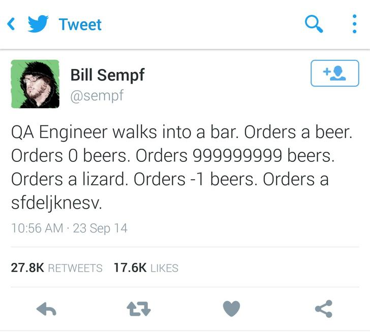

<!DOCTYPE html>
<html>
	<head>
    <meta charset="utf-8" />
		<meta name="viewport" content="width=device-width, initial-scale=1.0">

    <title>Méthodes et outils de test</title>

		<link rel="stylesheet" href="dist/reset.css">
		<link rel="stylesheet" href="dist/reveal.css">
		<link rel="stylesheet" href="dist/theme/white.css" id="theme">

		<!-- Theme used for syntax highlighting of code -->
		<link rel="stylesheet" href="plugin/highlight/monokai.css">
  </head>
  <body>
    <div class="reveal">
      <div class="slides">
        <section data-markdown>
          <script type="text/template">
            ## Daniel Garnier-Moiroux

            

            Software Engineer @ VMware

            https://github.com/Kehrlann

            daniel@garnier.wf

            ---

            ## Aujourd'hui, du logiciel partout

            ---

            ## Plan

            1. Tour d'horizon théorique
            2. En pratique

            ---
            
            # Tour d'horizon théorique

            <br>
            <br>

            Pourquoi ? Comment ?

            ---

            ## Pourquoi ?

            ---

            ## ...

            

            ---

            ## ... parce que

            

            ---

            ## Comment ?

            ---

            - <!-- .element: class="fragment" -->
            Des **cas** de tests
              - _Le bouton payer amène sur la page Paiement_
            - <!-- .element: class="fragment" -->
            Des **fixtures** == préconditions à un test
              - _Ajouter 3 items au panier_
            - <!-- .element: class="fragment" -->
            Des **actions**, "le code à tester"
              - _Cliquer sur Payer_ 
            - <!-- .element: class="fragment" -->
            Des **assertions**
              - _L'utilisateur est sur la page panier_
              - _Le prix affiché est 24,50€_
            - <!-- .element: class="fragment" -->
            Exécutés avec un **test runner**
            - <!-- .element: class="fragment" -->
            Produisent des **résultats**, dans un format donné (souvent textuel)
            
            ---
            
            

            ---

            

            ---

            

            ---

            

            ---

            

            ---

            ## "Test desiderata"

            _Kent Beck, 2019_

            <table>
              <tbody>
                <tr>
                  <td>Isolated</td>
                  <td>Behavioral</td>
                </tr>
                <tr>
                  <td>Composable</td>
                  <td>Structure-insensitive</td>
                </tr>
                <tr>
                  <td>Fast</td>
                  <td>Automated</td>
                </tr>
                <tr>
                  <td>Inspiring</td>
                  <td>Specific</td>
                </tr>
                <tr>
                  <td>Writable</td>
                  <td>Deterministic</td>
                </tr>
                <tr>
                  <td>Readable</td>
                  <td>Predictive</td>
                </tr>
              </tbody>
            </table>

            ---

            ## Combinaisons possibles:

            - **Unit tests:** Inspiring, writable, specific, fast ... not predictive ?
            - **Acceptance tests:** Readable (for non programmers), not fast or specific.
            - **Pour vous:**
              - Automated
              - Isolated, Composable, Deterministic
              - Specific

            ---

            ## Les frameworks

            - Pytest: https://docs.pytest.org/
            - Catch2: https://github.com/catchorg/Catch2

            ---

            ## En pratique
            
            
            
            ---

            ## TDD

            

            ---

            ## Mocking

            - pytest-mock
              - https://github.com/pytest-dev/pytest-mock 
            - FakeIt
              - https://github.com/eranpeer/FakeIt

            ---

            ## Repository du cours

            https://github.com/Kehrlann/python-test-examples

            <br>
            <br>

            ## Repository du TP

            https://github.com/Kehrlann/python-tests
          </script>
        </section>
      </div>
    </div>

    <script src="plugin/markdown/markdown.js"></script>
    <script src="plugin/highlight/highlight.js"></script>
    <script src="dist/reveal.js"></script>

    <script>
      Reveal.initialize({
              plugins: [RevealMarkdown, RevealHighlight],
              history: true,
              transition: "none",
              backgroundTransition: "none"
            });

			const loadScript = src => {
				return new Promise((resolve, reject) => {
						const script = document.createElement('script');
						script.type = 'text/javascript';
						script.onload = resolve;
						script.onerror = reject;
						script.src = src;
						document.head.append(script);
				})
			}
    </script>
  </body>
</html>
